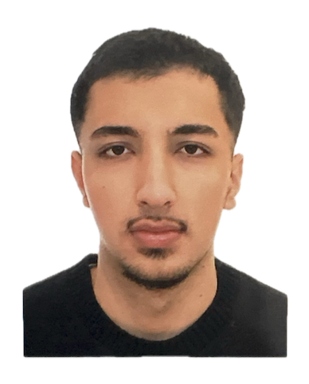

Ich will meine Kalorien tracken oder mein Training loggen. Dann schau ich mir an, was es gibt — meistens kostenpflichtig, überladen, ohne die Funktion, die ich brauche, oder das Design gefällt mir einfach nicht. Also baue ich mir meine eigene App.
Ich habe keinen Plan, ich habe Lust. Wenn ich was nicht kann, lerne ich es, während ich es baue.
Ich schreibe nicht jede Zeile Code von Hand. Ich nutze KI, um schneller von der Idee zum Prototypen zu kommen.
Ich kopiere keine Lösungen, ich kombiniere Ideen, die ich auf Pinterest oder in anderen Apps sehe, zu etwas, das für mich funktioniert.
Ob Trading oder Coden: Emotionen raus, Daten rein. Sonst wird es nichts.